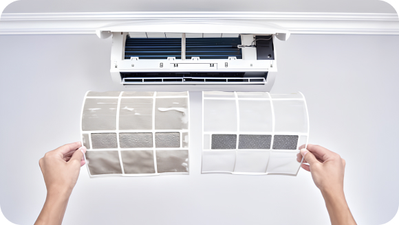
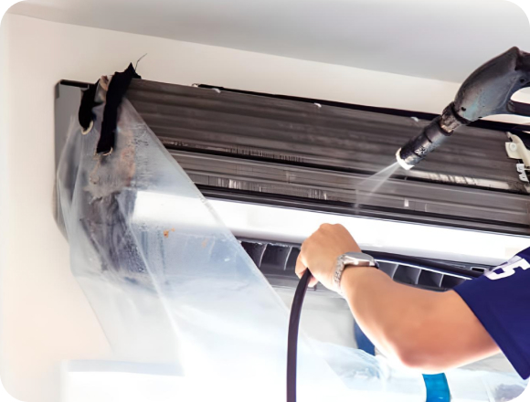

The Importance of Regular HVAC Inspections and Tune-Ups
Regular maintenance is crucial for ensuring the optimal performance and longevity of your HVAC (Heating, Ventilation, and Air Conditioning) system. By scheduling routine inspections and tune-ups, homeowners can identify potential issues early, improve energy efficiency, and prevent costly breakdowns. In this article, we'll delve into the importance of regular HVAC inspections and tune-ups and how they benefit both your comfort and your wallet.
-
Prevent Costly Repairs
Regular HVAC inspections allow technicians to identify minor issues before they escalate into major problems. By addressing issues such as worn-out components, loose connections, or dirty filters early on, homeowners can avoid costly repairs and extend the lifespan of their HVAC system
 -
Ensure Optimal
PerformanceOver time, dust, dirt, and debris can accumulate within your HVAC system, hindering airflow and reducing efficiency. A thorough inspection and tune-up involve cleaning critical components, such as coils, filters, and ductwork, to ensure optimal airflow and performance. This leads to improved comfort levels and lower
energy bills -
Enhance Energy
Efficiency AirA well-maintained HVAC system operates more efficiently, consuming less energy to provide the same level of heating or cooling. During a tune-up, technicians can calibrate thermostats, lubricate moving parts, and check refrigerant levels to optimize energy efficiency and reduce utility costs.
-
Extend Equipment Lifespan
Regular maintenance helps extend the lifespan of your HVAC equipment by reducing wear and tear and preventing premature failure. By investing in routine inspections and tune-ups, homeowners can avoid the need for frequent replacements and enjoy reliable comfort for years to come.
-
Improve Indoor
Air QualityA clean and well-maintained HVAC system plays a significant role in maintaining good indoor air quality. During inspections, technicians can identify and address issues such as mold growth, dust accumulation, or microbial contamination, helping to create a healthier indoor environment for you and your family
Regular HVAC inspections and tune-ups are essential for maintaining the efficiency, performance, and longevity of your heating and cooling system. By investing in routine maintenance, homeowners can prevent costly repairs, improve energy efficiency, extend equipment lifespan, and enjoy cleaner indoor air. Schedule your next HVAC inspection today to ensure your system operates smoothly year-round.